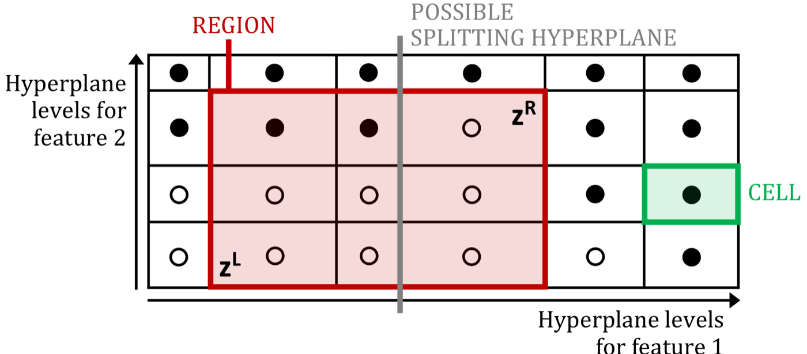
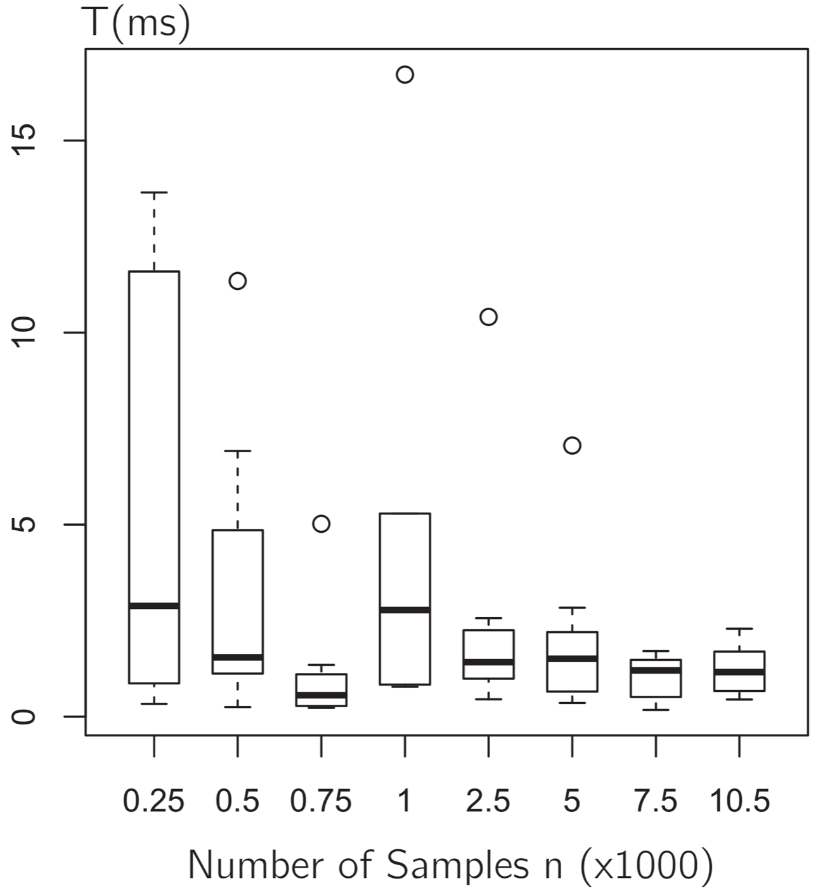
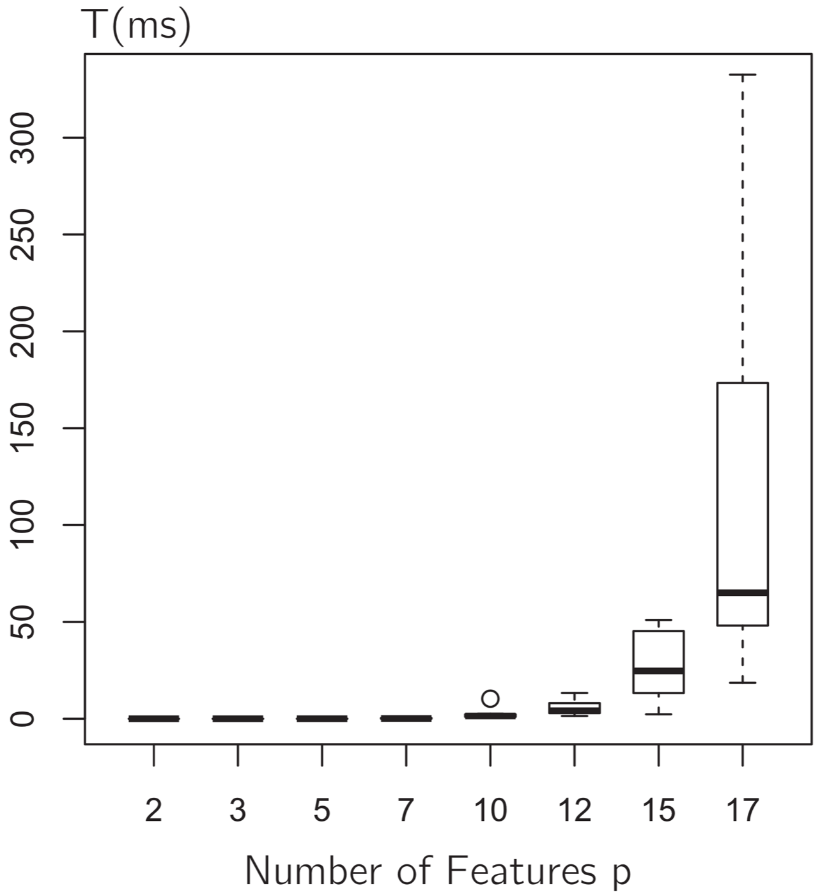
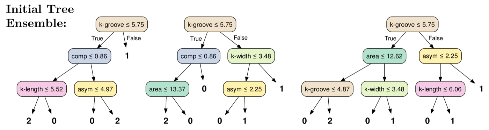
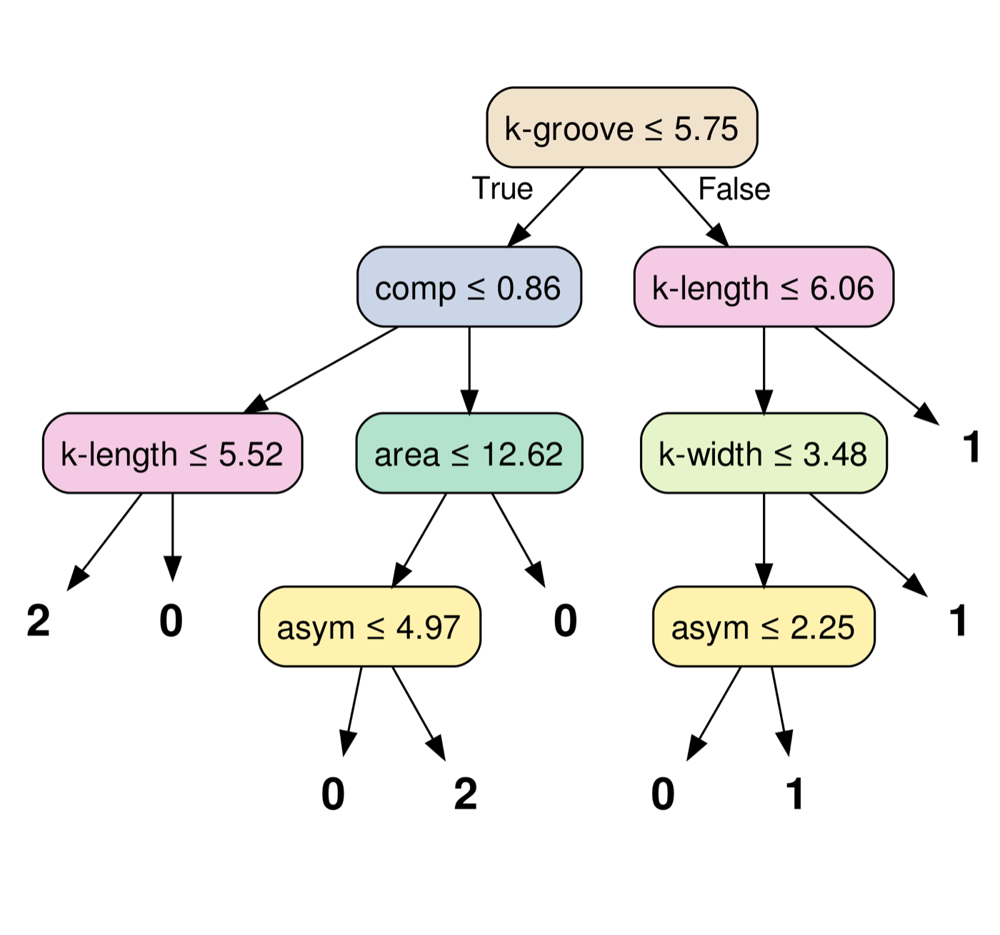

- 特徴空間のどこでも同じ予測学習データの上だけでなく、すべての入力でフォレストと同じクラスを返す（忠実である）。テストでの精度と F 値も 6 データすべてで一致した。
- 葉 51.2 → 32.810 本の深さ 3 の木からなるフォレストの葉の合計（平均 51.2）より、刈り込んだ born-again tree の葉（平均 32.8）のほうが少なかった。
- NP 困難深さ、葉の数、その階層的な組合せのどれを最小にしても NP 困難（3-SAT からの帰着）。忠実かどうかを確かめるだけでも NP 困難である。
フォレストと特徴空間のどこでも同じ予測をする、深さか葉の数が最小の決定木を求める
ランダムフォレストや勾配ブースティングの木は医療、司法、金融などで使われる。予測の質は高いが、複数の木を同時に使うので、1 本の決定木ほど読み解きやすくはない。Breiman と Shang（1996）の born-again trees は、フォレストで作ったデータから精度の近い 1 本の木を学習し直した。その後の研究もフォレストを単純な分類器で置き換えようとしたが、どれも発見的な方法で、元と同じ決定関数を保つ保証（忠実性）はなかった。
この論文が扱うのは次の問題である。重み \(w_t\) をもつ木の集合 \(\mathcal{T}\) が重みつき多数決で決める関数を \(F_\mathcal{T}\) として、
を解く。大きさは深さ（D）、葉の数（L）、深さを優先してから葉の数を小さくする階層的な目的（DL）の 3 通りを考える。条件は学習データの上だけでなく特徴空間全体にかかるので、求める木は同じ分類器の別の表現になる。定理 1 はこの問題が NP 困難であることを示し、定理 2 は最適な born-again tree の深さが元の木の深さの合計以下で、この上限がちょうど達成される場合があることを示す。
フォレストの分岐のしきい値で特徴空間をセルに区切ると、セルの中ではフォレストの予測は一定になる
特徴量 \(j\) について、フォレストの木に現れるしきい値（超平面）の集合を \(H_j\) とする。これらで特徴空間を区切った箱（セル）の中では \(F_\mathcal{T}\) が一定なので、born-again tree はこの超平面だけを使って作ればよい。2 つのセル \(\mathbf{z}^L \le \mathbf{z}^R\) で挟まれた箱を領域と呼ぶ。セルと領域の数は特徴量の数について指数的に増える。

領域を超平面で 2 つに分ける再帰を動的計画法で解き、単調性と二分探索で再帰の回数を減らす
領域 \((\mathbf{z}^L, \mathbf{z}^R)\) で忠実な最小の深さを \(\Phi(\mathbf{z}^L, \mathbf{z}^R)\) とすると、特徴量 \(j\) と超平面 \(l\) で左右の部分領域に分ける再帰で書ける。領域の中のセルがすべて同じクラスなら深さは 0（葉 1 枚）である。
\(\mathbb{1}_{jl}\) は左右の部分領域がどちらも深さ 0 で、両端のセルのクラスが同じとき（領域全体が同じクラスのとき）だけ 0 になる。同じクラスかどうかをすべてのセルで確かめると指数的な手間がかかるので、この判定を再帰とメモに組み込んだ。そのうえで次の 2 つの性質を使う。
- 単調性（定理 3）：部分領域の最適な深さはそれを含む領域の最適な深さ以下である。分けた片方の深さが下界に、分けたあとの値が上界になるので、上界と下界が一致したら探索をやめられる。
- 二分探索（定理 4）：超平面 \(l\) で左の深さが右の深さ以上なら、\(l\) より右の超平面は改善しない（逆も同様）。深さを目的にする場合、特徴量ごとの超平面の候補を \(O(\log(z^R_j - z^L_j))\) 回の再帰で調べられる。
最悪の場合の計算量は \(O(|\mathcal{S}_{\mathrm{region}}| \sum_j \log |H_j|)\) で、NP 困難な問題なので指数的だが、実験では上界と下界による打ち切りのおかげで調べる領域の数は最悪の場合よりはるかに少なかった。メモには各部分問題の最適値だけを残し、木そのものは最後にたどり直して作る。葉の数（L）と DL の目的への変更は付録にある。
計算時間は特徴量の数とともに指数的に増えるが、データ点が増えるとむしろ減った
実験は UCI などの 6 データ（Breast-Cancer、COMPAS、FICO、HTRU2、Pima-Diabetes、Seeds）で行った。カテゴリ変数は one-hot 符号化し、連続の特徴量は 10 段階に区切った。10 分割の交差検証の各分割で、深さ 3 の木 10 本からなるランダムフォレスト（分岐ごとに \(p/2\) 個の特徴量を候補にする）を scikit-learn で作り、それを入力にした。実装は C++ で、Xeon 2.10 GHz の 1 スレッドで動かした。
- 目的ごとでは、二分探索が使える深さ（D）が葉の数（L）や DL より大幅に速かった。
- FICO から抜き出した小さなデータで、計算時間は特徴量の数について指数的に増えた。木の数の影響はずっと小さかった。データ点が増えると計算時間はむしろ減った。データが多いと個々の木の判断がばらつかず、異なる超平面が少なくなって、動的計画法の状態が減るからである。


図2 深さを目的にしたときの計算時間（ミリ秒、FICO の部分データ、各 10 回）。調べていない設定は \(n = 2{,}500\)、\(p = 10\)、木 10 本に固定（論文 Fig. 3 の 3 枚のうち 2 枚、arXiv 版）。
born-again tree は大きくなりがちだが、学習データのない領域の分岐を刈り込むとフォレストの葉の合計より小さくなった
6 データの平均で、深さを目的にした born-again tree は深さ 9.3、葉 567.0 枚、葉の数を目的にすると深さ 11.8、葉 227.1 枚、DL では深さ 9.3、葉 266.4 枚だった。DL は最小の深さを保ちながら、葉の数を L の場合に近づけた。葉の数を優先すると、Pima-Diabetes のように深さが 50% 深くなるデータもあった（9.6 と 15.0）。
born-again tree は特徴空間のすべての領域でフォレストをまねるので、学習データが 1 つもない領域（たとえば「男性」で「妊娠中」）のための分岐も含む。そこで下から順に、分岐の両側に学習データが 1 つ以上あるかを確かめ、片側にしかない分岐はデータのある側の子で置き換える刈り込みを試した。
- 刈り込み後の深さは平均 7.4、葉は 32.8 枚で、元のフォレストの葉の合計 51.2 枚より少なかった。たとえば Breast-Cancer では葉 2,279.4 枚が 35.9 枚になった。
- テストでの精度と F 値は、フォレストと born-again tree で 6 データすべて一致した（平均 0.804 と 0.728）。これは問題の定義から期待どおりである。刈り込み後も平均 0.803 と 0.729 で、差はわずかだった。


忠実性は保ったまま大きさの最適性を諦める発見的な方法は、深さと葉の数を約 2 割増やす代わりに大幅に速かった
特徴量が増えると最適な方法の時間は指数的に増える。そこで論文は、領域ごとに無作為に 1,000 個のセルを選んで情報利得が最大の超平面で分け、選んだセルがすべて同じクラスなら整数計画ソルバーで領域全体が同じクラスかを確かめる発見的な方法を作った。同じでなければ分割を続けるので、木は必ず忠実になるが、大きさは最小とは限らない。
6 データの平均で、計算時間は深さを目的にした最適な方法が 6.74 秒、葉の数では 234.28 秒、発見的な方法は 0.28 秒だった。代わりに深さは平均 22.53%、葉の数は 20.10% 増えた。Ionosphere、Spambase、Miniboone（13 万件超、特徴量 50 個）のような大きなデータでも 1 分以内に動いた。
最適決定木の動的計画法を「データに合わせる」から「フォレストを正確に写す」問題に使った
- 最適決定木の研究は精度の高い疎な木を求めてきたが、フォレストと同じ精度の born-again tree を作る研究はなかった、と論文は位置づける。目的は訓練誤差ではなく、木の大きさを最小にすることである。
- 計算時間は特徴量の数について指数的に増え、実験は 6 データ、深さ 3 の木 10 本のフォレストで、特徴量は 10 段階に区切っている。
- 論文は今後の課題として、より大きなデータのための最適な方法と速い発見的な方法、構築中の刈り込みとの組合せ、born-again tree から見たフォレストの構造の研究を挙げる。学習データのない領域の分岐がフォレストの汎化にどう関わるかは未解明の問いとして残している。
@inproceedings{vidal2020bornagain,
title = {Born-Again Tree Ensembles},
author = {Vidal, Thibaut and Schiffer, Maximilian},
booktitle = {Proceedings of the 37th International Conference on Machine Learning},
series = {Proceedings of Machine Learning Research},
volume = {119},
pages = {9743--9753},
publisher = {PMLR},
year = {2020}
}
著者と書誌情報は PMLR 版による。arXiv 2003.11132 の改訂版（v2）は Toni Pacheco を第 2 著者に加えて 3 名としており、PMLR 版では Pacheco は謝辞に挙がっている。ページの数値は arXiv 版によるが、表の数値は PMLR 版の PDF と一致することを確かめた。